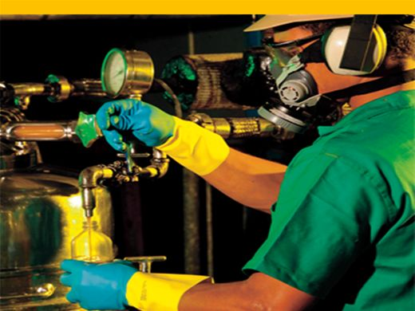

EPIs, o que são e por que são tão importantes no setor do transporte de produtos inflamáveis?

Representação dos equipamentos presentes nos conjuntos de EPI
EPI é a sigla para Equipamento de Proteção Individual, e se trata de qualquer dispositivo que tenha a função de proteger o trabalhador de riscos de quaisquer natureza, sejam eles, físicos, químicos, mecânicos ou biológicos
Exemplos comuns de EPIs incluem capacetes de segurança, óculos de proteção, luvas, protetores auriculares, máscaras respiratórias, cintos de segurança, calçados de segurança, entre outros, tornando-se essenciais no transporte de combustíveis automotivos .
Os Equipamentos de Proteção Individual (EPIs) desempenham um papel crucial no transporte de produtos inflamáveis, contribuindo para a segurança dos trabalhadores e a prevenção de acidentes. Aqui estão algumas razões pelas quais os EPIs são importantes nesse contexto:
Proteção contra incêndios e explosões: Os produtos inflamáveis representam um risco significativo de incêndio e explosão durante o seu transporte. EPIs como roupas de proteção resistentes a fogo, capacetes de segurança e óculos de proteção são essenciais para proteger os trabalhadores em casos de acidentes súbitos.
Respiração segura: Em situações de transporte de produtos inflamáveis, pode haver a possibilidade de vazamento de gases tóxicos. Máscaras de proteção respiratória são EPIs importantes para proteger os trabalhadores contra a inalação de substâncias perigosas.
Proteção dos olhos e do rosto: Os produtos inflamáveis podem respingar no trabalhador e pode vir a causar danos aos olhos e ao rosto dos colaboradores. Óculos de proteção e escudos faciais são EPIs que ajudam a prevenir lesões oculares e faciais.
Com esses dados, conclui-se que o uso adequado dos EPIs são extremamente necessários em todos os setores, sobretudo nos processos usando combustiveís inflamáveis, portanto, o uso dos EPIs de maneira correta, podem e diminuem acidentes por todo o mundo.